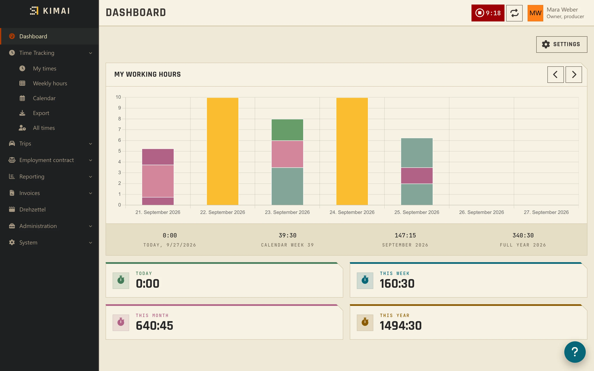
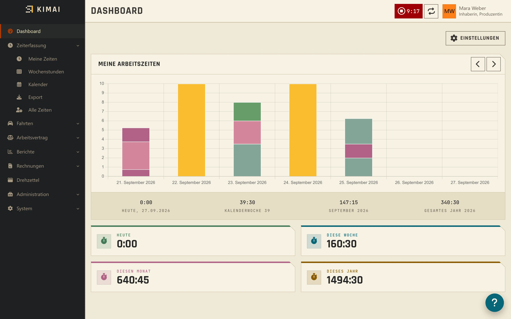
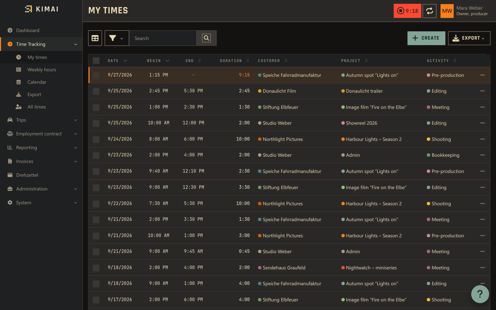
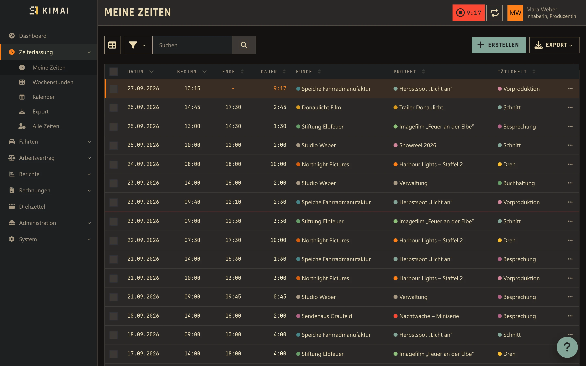

Two palettes, one per user
Zwei Paletten, je Nutzer wählbar
Gruvbox dark or “Leinen” light. Every user picks their own under Profile → Settings → Theme, independent of everyone else.
Gruvbox dunkel oder „Leinen“ hell. Jeder Benutzer wählt selbst unter Profil → Einstellungen → Theme, unabhängig von allen anderen.
One accent color for everyone
Eine Akzentfarbe für alle
Blue, yellow, orange or aqua, set once under System → Settings → Knust and applied across both palettes.
Blau, Gelb, Orange oder Aqua, einmal unter System → Einstellungen → Knust gesetzt und in beiden Paletten wirksam.
Square, with one cut corner
Eckig, mit einer Abschrägung
No rounded corners anywhere — except a small beveled triangle on every card, in the background color, the “Knust” cut.
Keine runden Ecken irgendwo — außer einem kleinen abgeschrägten Dreieck auf jeder Karte, in der Hintergrundfarbe, dem „Knust“-Schnitt.
Rajdhani and JetBrains Mono
Rajdhani und JetBrains Mono
Rajdhani for headings, JetBrains Mono for numbers, times and amounts — dates and durations line up instead of drifting.
Rajdhani für Überschriften, JetBrains Mono für Zahlen, Zeiten und Beträge — Daten und Dauern stehen bündig statt zu wandern.
Styles the shrippen plugin kit
Gestaltet das shrippen-Plugin-Kit
Plugins using kimai-plugin-ui 0.4’s markers (kpu-num, kpu-tier, kpu-mark) — Drehzettel, Holiday, Abrechnung, Anfahrten, Farbfächer — pick up Knust automatically.
Plugins mit den Kennzeichnungen aus kimai-plugin-ui 0.4 (kpu-num, kpu-tier, kpu-mark) — Drehzettel, Holiday, Abrechnung, Anfahrten, Farbfächer — übernehmen Knust automatisch.
Variables only, markup untouched
Nur Variablen, Markup unverändert
Only CSS variables and a few component rules on top of Tabler. Kimai’s own markup and behavior stay exactly as they are.
Nur CSS-Variablen und wenige Komponentenregeln über Tabler. Kimais eigenes Markup und Verhalten bleiben genau, wie sie sind.
One theme, two palettes
Ein Theme, zwei Paletten
Gruvbox dark for evenings, “Leinen” (linen) light for daylight — same shapes, same type, same accent color, just the palette underneath each user picks for themselves.
Gruvbox dunkel für den Abend, „Leinen“ hell für den Tag — gleiche Formen, gleiche Schrift, gleiche Akzentfarbe, nur die Palette darunter wählt jeder für sich.
- Switch under Profile → Settings → Theme, or leave it on “Automatic” to follow the system
- The sidebar always stays dark — Kimai fixes it to
data-bs-theme="dark" - Login screen swaps the logo for the light palette automatically
- Wechsel unter Profil → Einstellungen → Theme, oder auf „Automatisch“ lassen, dann folgt es dem System
- Die Seitenleiste bleibt immer dunkel — Kimai setzt dort fest
data-bs-theme="dark" - Der Login-Bildschirm tauscht das Logo für die helle Palette automatisch


A plugin says what, Knust says how
Ein Plugin sagt was, Knust sagt wie
A plugin marks what an element is — a number, a severity, a color dot — with Tabler classes and kimai-plugin-ui’s markers. Knust decides what that looks like. Without Knust, the plugin looks like a normal Kimai plugin.
Ein Plugin kennzeichnet, was ein Element ist — eine Zahl, eine Schwere, ein Farbpunkt — mit Tabler-Klassen und den Kennzeichnungen aus kimai-plugin-ui. Knust entscheidet, wie das aussieht. Ohne Knust sieht das Plugin aus wie ein normales Kimai-Plugin.
kpu-numfor numbers, times and amounts → JetBrains Monokpu-tier+data-kpu-tier="0–3"for a severity → tinted band, colored bar and textkpu-markfor a customer/project/activity color dot → square instead of round- Own plugin CSS:
--knust-*variables, always with a fallback, e.g.border-radius: var(--knust-mark-radius, 50%)
kpu-numfür Zahlen, Zeiten und Beträge → JetBrains Monokpu-tier+data-kpu-tier="0–3"für eine Schwere → getönte Fläche, farbiger Balken und Textkpu-markfür Farbpunkte von Kunde, Projekt, Tätigkeit → eckig statt rund- Eigenes Plugin-CSS:
--knust-*-Variablen, immer mit Rückfallwert, z. B.border-radius: var(--knust-mark-radius, 50%)
Full rules and every variable: PLUGINS.md.
Alle Regeln und Variablen: PLUGINS.md.


How it works
So funktioniert es
Knust hooks into Kimai’s own theming: a subscriber sets the accent, a square radius and the logo on every request, and a second subscriber loads Knust’s stylesheet on every page, login included.
Knust hängt sich in Kimais eigenes Theming ein: Ein Subscriber setzt bei jeder Anfrage Akzent, eckigen Radius und Logo, ein zweiter lädt auf jeder Seite, auch beim Login, das Knust-Stylesheet.
Install
Installation
- Download
KnustBundle-<version>.zipand unzip it intovar/plugins/; it contains the folderKnustBundle, whose name must stay. - Run
bin/console kimai:reload. - Run
bin/console kimai:bundle:knust:install— it copies CSS and fonts topublic/bundles/knust/. - Set the accent color under System → Settings → Knust. Light or dark is each user’s own choice under Profile → Settings → Theme.
- Lade
KnustBundle-<version>.zipherunter und entpacke es nachvar/plugins/; es enthält den OrdnerKnustBundle, dessen Name bleiben muss. - Führe
bin/console kimai:reloadaus. - Führe
bin/console kimai:bundle:knust:installaus — kopiert CSS und Schriften nachpublic/bundles/knust/. - Stelle die Akzentfarbe unter System → Einstellungen → Knust ein. Hell oder dunkel wählt jeder Benutzer selbst unter Profil → Einstellungen → Theme.
Logo: the shrippen mark with the “KIMAI” wordmark is the default; theme.branding.company or theme.branding.logo take priority if set.
Logo: die shrippen-Bildmarke mit der Wortmarke „KIMAI“ ist Standard; theme.branding.company oder theme.branding.logo haben Vorrang, falls gesetzt.
Questions
Fragen
Do I need the other shrippen plugins?Brauche ich die anderen shrippen-Plugins?
No. Knust works standalone on any Kimai 2.67. Plugins that use the kimai-plugin-ui kit (Drehzettel, Holiday, Abrechnung, Anfahrten, Farbfächer) simply look best with it, since their markers style automatically.
Nein. Knust funktioniert eigenständig auf jedem Kimai 2.67. Plugins mit dem kimai-plugin-ui-Kit (Drehzettel, Holiday, Abrechnung, Anfahrten, Farbfächer) sehen damit nur am besten aus, weil ihre Kennzeichnungen automatisch gestaltet werden.
Does it change Kimai’s markup?Ändert es Kimais Markup?
No. Only CSS variables and a handful of component rules on top of Tabler. Kimai’s templates, JavaScript and behavior are untouched.
Nein. Nur CSS-Variablen und eine Handvoll Komponentenregeln über Tabler. Kimais Templates, JavaScript und Verhalten bleiben unverändert.
Which browsers does it need?Welche Browser braucht es?
Any current browser for the theme itself. The dashboard counters color their bar via :has(), which needs Chrome 105+, Firefox 121+ or Safari 15.4+; older browsers just show the bar uncolored.
Für das Theme selbst jeder aktuelle Browser. Die Dashboard-Zähler färben ihren Balken über :has(), das braucht Chrome 105+, Firefox 121+ oder Safari 15.4+; ältere Browser zeigen den Balken einfach ungefärbt.
What doesn’t Knust reach?Was erreicht Knust nicht?
The sidebar stays dark (Kimai fixes that), modals stay square-cornered (a clipped bevel would cut off “…” menus), and Chart.js diagrams color themselves via JavaScript, unstyled by Knust.
Die Seitenleiste bleibt dunkel (das setzt Kimai fest), Modals bleiben eckig ohne Abschrägung (ein Clip-Path würde die „…“-Menüs abschneiden), und Chart.js-Diagramme färben sich per JavaScript, unangepasst durch Knust.